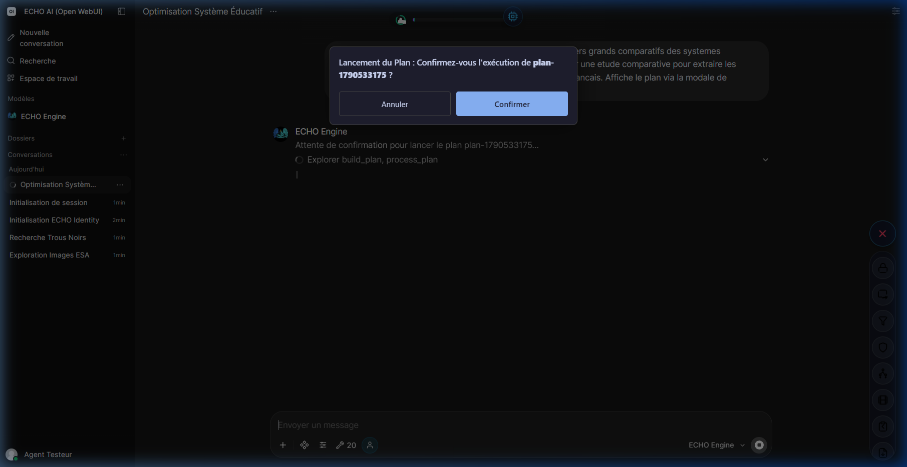
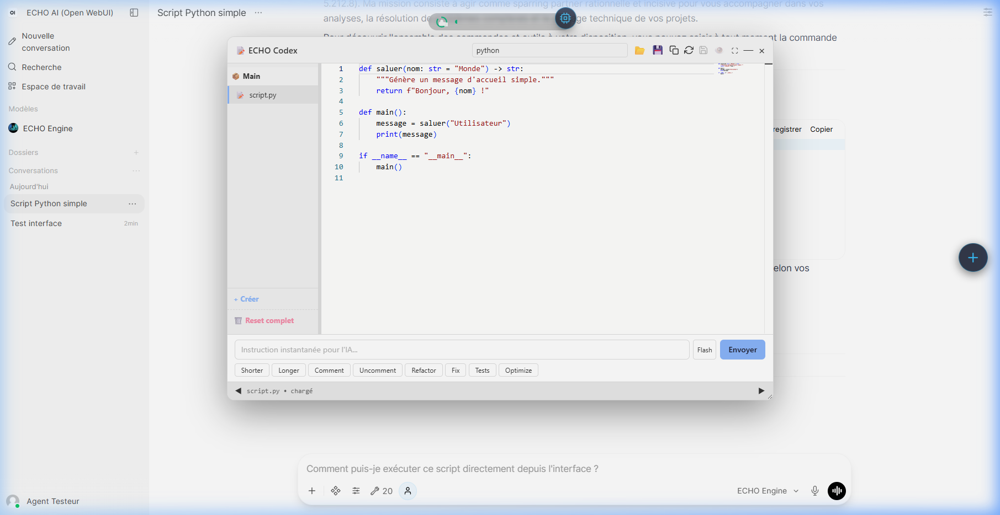

10. Planification & Exécution
Face à un problème complexe, ECHO ne se précipite pas. Il dispose d'outils dédiés pour structurer sa démarche et pour tester des solutions en toute sécurité.
1. Planification Stratégique (Le Cerveau Lent)

Lorsque vous confiez à l'IA une mission d'envergure (comme construire une application entière ou rechercher des informations sur plusieurs jours), le système va d'abord générer un Plan d'Action.
Ce plan prend la forme d'une feuille de route (check-list). Au fil de sa réflexion et de ses actions, ECHO met automatiquement à jour ce plan en cochant les étapes terminées ou en révisant sa stratégie en cas d'imprévu. Ce document survit à vos sessions : même si vous vous déconnectez, l'IA reprendra exactement là où elle s'était arrêtée à votre retour.
2. La Sandbox (Exécution Sécurisée de Code)

ECHO possède la capacité d'écrire, mais surtout d'exécuter du code informatique (Python ou JavaScript) en temps réel.
Si vous lui demandez de trier un fichier Excel de 100 000 lignes ou de résoudre un algorithme complexe, l'IA génère un script et l'exécute dans un environnement « bac à sable » isolé. Cela lui permet d'analyser d'importantes quantités de données avec la puissance de l'ordinateur, sans risque pour votre système principal.
3. Calendrier et Programmation de Tâches (Open WebUI)
ECHO pilote directement l'agenda et le moteur de planification intégrés à votre interface Open WebUI :
- Gestion de votre Calendrier : Vous pouvez demander à ECHO de lister ou lire vos événements, de vérifier vos disponibilités, de rechercher un rendez-vous, de planifier ou modifier un événement (avec titre, lieu, description et horaires) ou d'annuler un créneau devenu obsolète.
- Programmation de Tâches Récurrentes (CRON Cognitif) & Organisation : Vous pouvez ordonner à ECHO de programmer, lister, inspecter, modifier ou supprimer ses propres missions différées ou périodiques (par exemple : « Tous les lundis à 8h, fais une synthèse des nouvelles vulnérabilités critiques et classe-la dans mon dossier Veille »), mais aussi d'explorer vos dossiers et les étiquettes (tags) de vos discussions pour retrouver instantanément le bon espace de classement. À chaque échéance, le système crée automatiquement une nouvelle discussion dédiée dans le dossier choisi et exécute la mission sans que vous ayez à intervenir.
⚙️ Dossier d'Ingénierie & Spécifications
1. Strategic Planner (strategic_planner.py v5.231.20.1)
- Conception & Persistance Git Concurrente : Protégé par le verrou partagé
get_codex_lock(uid, cid)et déporté hors de l'Event Loop viaasyncio.to_thread,build_plan(propulsé parMODEL_PROMETHEUSavecoverride_thinking="high") génère deux fichiers liés dans le Codex Git (main) et les indexe dans la table SQLiteecho_resources: le document stratégique{plan_id}_{slug}.md(statut initialproposed) et la liste de tâchestasks_{plan_id}_{slug}.md. - Validation, Suivi Tactique & Analyse :
process_plansoumet le plan via une modale de confirmation interactive (transitionproposed→executing).update_planpermet de réviser la stratégie tant qu'elle est au statutproposed, tandis queupdate_tasks(MODEL_APOLLO) assure le suivi tactique des cases à cocher ([ ],[/],[x],[!],[-]), complétés parread_plan,delete_plan(suppression atomique du plan et de son fichiertasks_associé) etanalyze_plan(MODEL_PROMETHEUS,override_thinking="high"). - Proprioception : Le modèle consulte l'état des plans à la demande via
query_registryafin de préserver la fenêtre contextuelle.
2. Coding Worker & Code Executor (worker_api.py v5.231.20.1 & code_executor_tool.py v5.231.20.1)
Micro-service Docker isolé (echo-coding-worker, IP .21 sur echo-sandbox, Flask Port 5000) exécutant Python et Node.js.
- Confinement Bubblewrap (
bwrap), Verrou de Session & Linting Pré-Exécution : Sérialisé par session via_get_session_sandbox_lock(user_id, chat_id), chaque script est validé syntaxiquement avant lancement (py_compilepour Python,node -cpour Node.js) puis exécuté depuis l'espacesandboxdu Codex dans un namespace isolé avec montages contrôlés (/sandbox,/main,/files,/echo_libs_sandbox,/sandbox-agent-readme.txtet.tmp). La sortie texte est plafonnée parECHO_MAX_TOOL_TEXT_OUTPUT_CHARS = 131 072octets (131 Ko, protection anti-OOM). - Bidi Polling & Multiplexage JSONL UCTP par
run_id(echo_monitor) : Double canal asynchrone temps réel permettant au script d'émettre des interfaces HTML/JS multi-fenêtres (window_idvia/sandbox/.echo_monitor.jsonltransmis par UCTP et isolé parrun_idsur/poll_monitor) et de recevoir les événements interactifs du navigateur viaget_ui_payload()(_echoGetAggregatedPayload(cid)isolé parchat_idet mis à jour atomiquement paros.replace). - Supervisor Pattern & JS Heartbeat (Anti-Zombie) : Un pacemaker JS surveille la fenêtre du Sandbox Monitor. En cas de fermeture par l'utilisateur, d'expiration du Boot Timeout ou d'appel à l'outil
kill_sandbox_execution, le superviseur invoque la route distante/kill(ciblée parrun_id) qui détruit immédiatement l'arbre de processus (PID tracking dans_active_sandboxes).
3. Pilotage du Calendrier, Étiquettes & Automatisations Open WebUI (generalist_tools.py v5.231.20.1)
Les fonctions natives d'Open WebUI sont encapsulées de manière sécurisée par le proxy safe_owui_call (filtrage dynamique de signature via inspect.signature et retour normalisé wrap_tool_output) :
- Calendrier UI :
create_ui_calendar_event(titre, description, lieu, datesstart/endau format strict ISO 8601),update_ui_calendar_event,read_ui_calendar_events,list_ui_calendar_events,search_ui_calendar_eventsetdelete_ui_calendar_event. - CRON Cognitif, Tags & Conseiller Opérationnel Hybride :
create_ui_automationprogramme des tâches de fond récurrentes ou ponctuelles selon la norme iCalendarRRULE(avecDTSTARTobligatoire siCOUNTest défini, modèle fixé surOWUI_ORCHESTRATOR_MODEL/echo_orchestrator) et résout ou crée automatiquement le dossier cible (target_folder_name, assisté delist_ui_folders). Chaque déclenchement instancie un chat indépendant. Complété parupdate_ui_automation(re-verrouillage automatique du modèle),read_ui_automations,list_ui_automations,delete_ui_automation,list_ui_tags(interrogation de la table SSoTwebui.db::tagpour la conversation courante ou l'ensemble des conversations),wait_timer(HUD isolé parchat_id),ask_userettool_advisor(Agent Conseiller Opérationnel Hybride exécuté surMODEL_APOLLOavecoverride_thinking="medium", pré-injecté avec la table des matières des 10 manuels14-owui-libs/tool_guides/*.mdviaEchoToolGuidesManager).